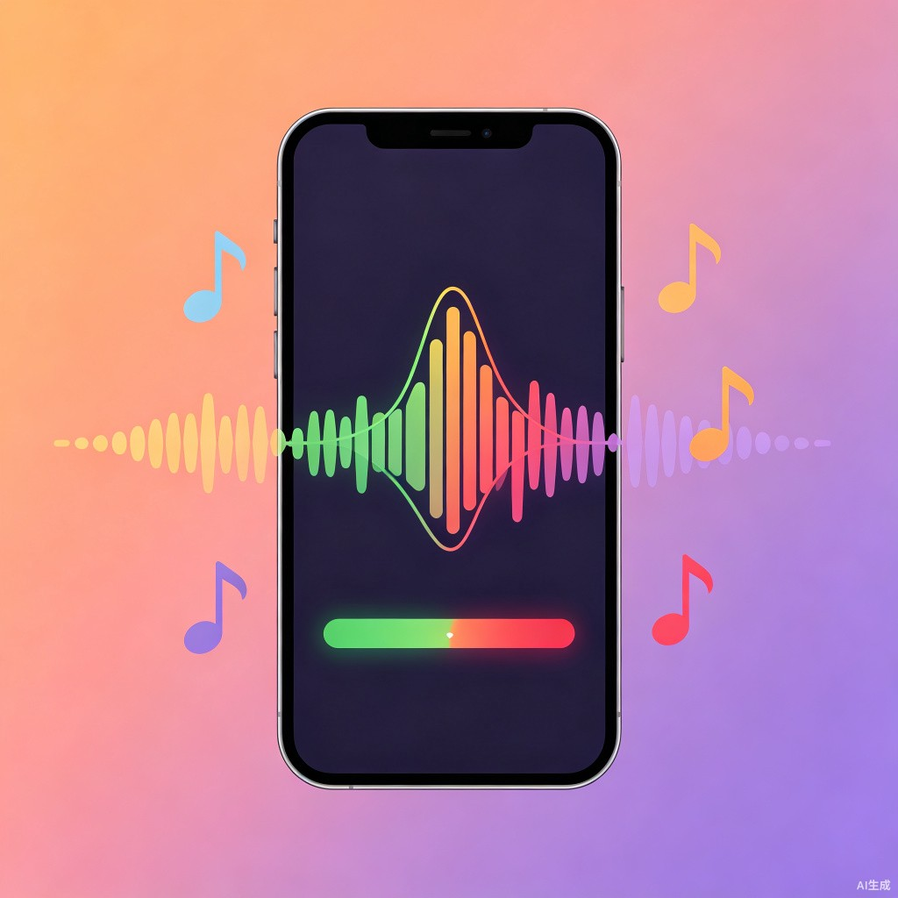

让五音不全的人拿下一首歌

选一首歌，AI 逐句带你练透
选择歌曲来源
点击上传音频文件
支持 MP3、WAV、M4A 格式
AI 将自动提取歌词和音高参考线
《朋友》- 第 1 / 6 句
AI 对话反馈
好，我们开始练《朋友》。
第一句："这些年 一个人"
唱的时候注意，'年'字稍微往下沉一点，不用唱很高，跟你平时说话差不多就行。
AI示范：
点击下方按钮跟唱这句歌词
已练习 0/6 句 · 准确率 --